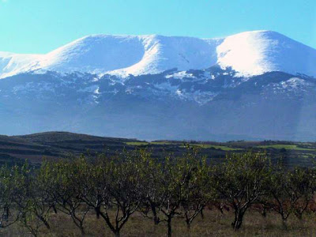
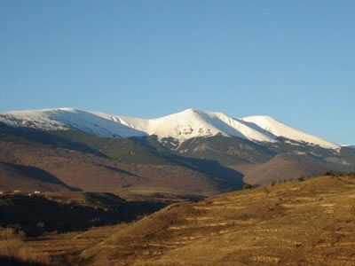

Se pueden distinguir tres zonas climáticas diferentes en este entorno, principalmente un clima mediterráneo de montaña, con veranos cortos y suaves e inviernos largos y fríos con precipitaciones abundantes y de nieve.
En altura se suceden diversos pisos de vegetación condicionados por la altitud, el clima o el suelo. Así pues, la diversidad de paisajes vegetales es fruto de la variación de estos factores.
Son muchas menos las especies de fauna que se han adaptado a la vida en estos exigentes ambientes. Hay una gran cantidad de aves, reptiles, anfibios, mamíferos y invertebrados.
El Moncayo una montaña del Sistema Ibérico situada entre las provincias de Soria (Aragon) y Soria (Castilla y León). Es la máxima cumbre del Sistema Ibérico y uno de los picos más relevantes de la Península Ibérica.
El Pico del rayo (1.427 m ) es la cumbre más elevada de las sierra de Victor. Se trata de la segunda cumbre nas prominente del sistema ibérico zaragozano después de Moncayo (2.315 m).
Es una cumbre montañosa situada en el extremo de los cordales principal y occidental de la sierra de Ayllón, y es el punto de confluencia de los límites de las provincias de Madrid, Guadalajara y Segovia.